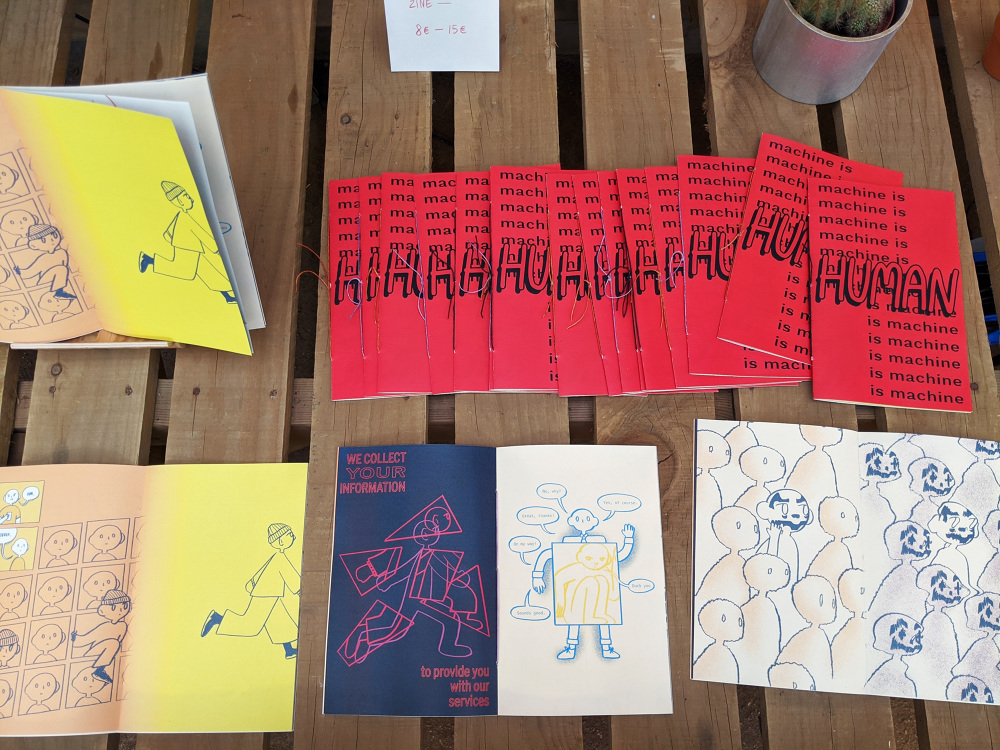

MACHINE IS HUMAN IS MACHINE
machine is human is machine is a zine presented at CtrlZ.AI, an event alongside the 2020 ACM Conference on Fairness, Accountability, and Transparency (ACM FAccT) in barcelona. CtrlZ.AI harbored conversations and criticisms of new technology and AI by providing a space for zines and workshops. this zine was born from these ideas. through satire and art, it explores how tech is being developed using our behaviors without us really knowing, and how this tech in turn influences our behaviors and ways of thinking.

when i think about AI and emerging tech, i think about surveillance. our facial data, search history, every single move we do online, is tracked and uploaded for someone to use. i get a feeling of dread when i think about this too much and i start to wonder how one can escape such a system, which brings me to: juggalos. juggalos resurfaced in the media when people found out juggalo makeup evades facial recognition software. what a charming fault, i thought, but now people know. what if to improve the software, AI started digitally putting juggalo makeup on people in order to recognize faces through it? what would it mean if this tech was developed for face masks, while people are actively protesting against oppressive governments?
i also thought about how AI is developed and what it stands for. most of this tech tries to emulate some aspect of the human experience with data and predictive algorithms, essentially generalizing human experiences to create a specific instance. what are the dangers of being complicit in the development of this tech, and where do we draw the line for the role that this tech plays in our lives?
my challenge with this zine was in ideation. not in the lack of it, but rather that i was thinking too much. i was thinking about surveillance, the flattening of human experience through data collection, the biases that inevitably make its way into tech. i had many concepts for spreads that i wasn't quite sure how to link together yet. a friend linked me a few resources to help me get my mind in order, where i latched onto two things: google's captcha that gathers data for self-driving car software and shoshana zuboff's research. the bit about the captcha was a revelation, and i was so disturbed by this invasive data collection that it set the entire mood for this project. shoshana zuboff's theories about surveillance capitalism grounded my swirling thoughts and concerns into a clear direction for the zine.
the zine starts off with an AVERAGE PERSON (you) using their phone and unknowingly feeding data to aliens with vulgar intentions. the AVERAGE PERSON (you) doesn't care, becoming one of many faces in the database where our CHARACTER springs to life. they try to move forward, try to protest how their information is being taken, but the TECHNOLOGY (unseen) takes it anyway. our CHARACTER is stripped of the specific traits that make them human by TECHNOLOGY's data collection, represented by their clothing. even as CHARACTER is devoid of a sense of self, TECHNOLOGY fills it in for them with an automated system made from data. CHARACTER attempts to escape TECHNOLOGY by wearing juggalo makeup, but through more data collection from the crowd TECHNOLOGY learns to see past it. our CHARACTER is left empty, floating with no direction at the mercy of TECHNOLOGY.